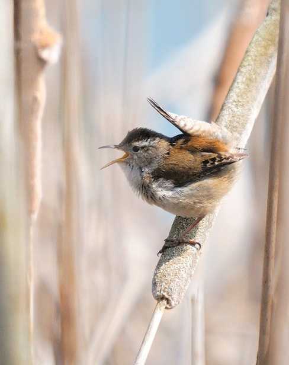

The Wren
Other Names:
- Wran
- Sally
- Chitty Wren
- Stumpy Toddy
Description
The wren is one of Ireland's smallest and most widespread birds. It is found in almost all habitats including farmland, woodland, scrub, mountain and even on cliffs and offshore islands. Its small rounded body and tiny cocked tail are distinctive, however it can be a surprisingly difficult bird to see - more often heard than seen. The upper parts are reddish-brown and underparts paler with some greyish tones - faint dark barring can be seen at close range. There is a white stripe over the eye and the bill is fine and pointed.
| Ireland's Top 20 Birds in Winter 09/10 | ||
| Rank | Species | Percentage of Gardens |
| 12 | Wren | 83.0 |
Legend
"The wren, the wren, the King of all birds"
The wren is often referred to as "the King of all birds" based on a legend of an election of the "king of birds". The bird who could fly to the highest altitude would be made king. The eagle outflew all other birds, but he was beaten by a small bird who had hidden in his plumage.